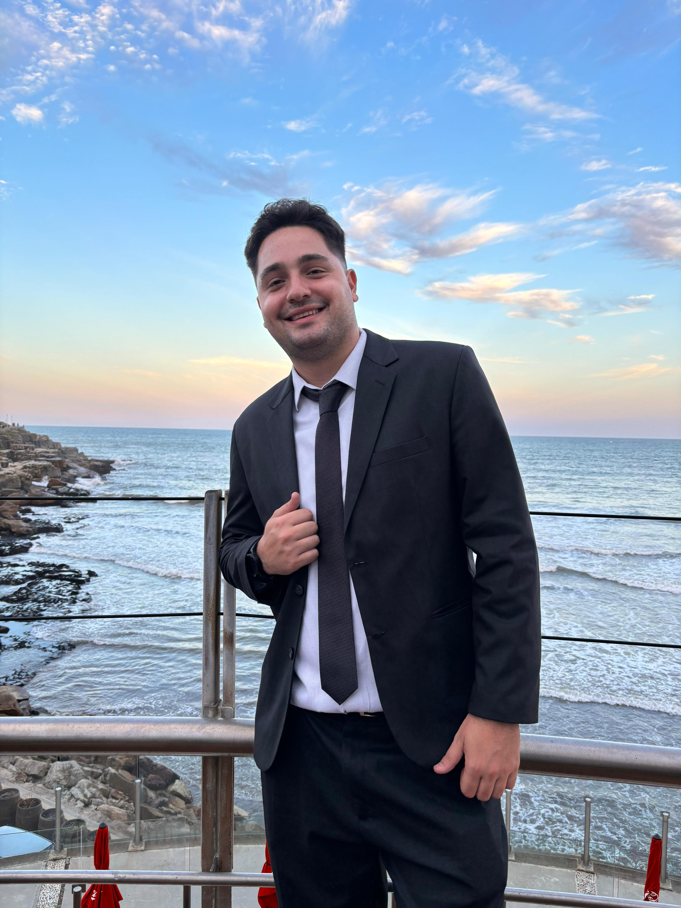

- Nombre y Apellido: Alejo Ferrari Cioffi
- Carrera: Tec. Desarrollo de Sofware
- Proyecto:
- Sitio Profesional: Barberia CorteCriollo
- Descripción:
- Barbería ficticia llamada ‘Corte Criollo’, buscando plasmar profesionalidad y seriedad.
- Prototipo:
- Link
- Sitio:
- Link
- Repositorio:
- Link